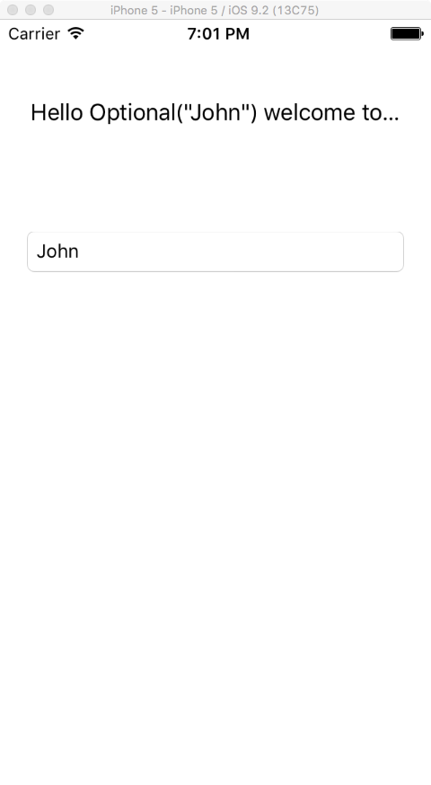
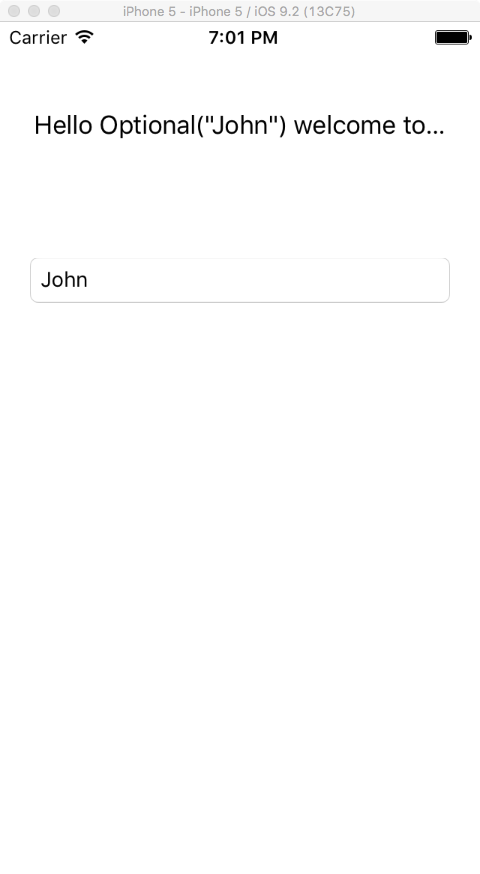

MAP523/DPS923 Lab #0 Winter 2016
Creating an iOS Hello World App in Xcode 7.2 and Swift

MAP523/DPS923 Lab #0 Winter 2016 | |
step 01: Open Xcode and select "Create a new Xcode project".
Step 02: When asked for a project template, on the left side of the
dialog (operating system and application type), choose iOS > Application,
and then "Single View Application"
Step 03: For project options, enter "helloWorld" for product name, "Swift" for language.
"iPhone" for devices, and "none" for Organization identifier.
NOTE: If "Include Unit/UI Tests" are checked, uncheck those options and
click on the "next" button.
Step 04: Now choose a location where your project will be saved and click on the "Create"
button.
You should be presented with a screen that looks similar to the one below.
Step 05: Next, at the top of the screen (to the right of the "Stop application" button,
click on the "Set the active scheme" drop down list and choose "iPhone 5".
Step 06: On the Navigation menu on the left, move into the "helloWorld" folder and
click on "Main.storyboard".
Step 07: To the right of the Project Navigator, move into "View Controller Scene" >
and then click on the "View Controller" icon.
Step 08: On the Utilities panel (right side, but below the main navigation bar), click on the
"Show attributes inspector" or use Option + Command + 4 using the keyboard.
Step 09: Still in the Utilities panel on the bottom panel, click on the
"Show the Object library" icon or use Control + Option + Command + 3 using the keyboard.
Step 10: In the Simulated Metrics area, change the Size to "iPhone 4-inch" and Orientation
to "Portrait"
Step 11: In the object panel scroll down until you see "Label - A variably sized amount
of static text" (or by typing "Label" in the filter field below the object panel)
and click and drag the Label object and drop it into your View.
The Label should be centred near the top and expanded to either edge (within the
iPhone grid markers) of the view (leaving a small margin on either side).
Step 12: In the Label attributes area, replace "Label" with "Name: " and choose centre for
Alignment, and change the font to "System 13.0".
Step 13: Next, do the same thing for a "Text Field" object, placing it below the Label,
centred and expanded to the edges (using the same margins as the Label) of the view.
In the attributes area, enter "Your name here..." in the Placeholder field.
 Step 14: Now. we will need to reveal the Assistant Editor to begin adding the code that
will allow users to enter text (in the Text Field object) and have it display in
the contents in the Label object.
To reveal the Assistant editor, move to the top left navigation bar and click on the
icon with 2 circles (Show the Assistant Editor) or by typing Option + Command + Enter
on the keyboard. You can hide the Navigation and Utilities panels (to allow you to
clearly see both the view controller and the assistant editor) by clicking on the
first and third icons in the 2nd group of 3 icons on the top left menu bar or by
typing command + 0 then option + command + 0 on the keyboard).
Step 15: Creating a connection from the Label to the ViewController class:
In the view, control + click anywhere within the Label and drag the mouse to the
assistant editor window (a blue line will be visible) and drop the line below:
"class ViewController: UIViewController {", but above the function:
"override func viewDidLoad() {"
This will create a popup "Connection" window. Only change the Name field by
entering "nameLabel" and click on the "Connect" button.
The code generated should have been: @IBOutlet var nameLabel: UILabel!
The @IBOutlet var nameLabel: UILabel! represents the User Interface element (Label)
within the Storyboard, now declared as a real variable (var) within the ViewController Class.
Step 16: Do the same for the Text Field object, but this time instead of Outlet, choose Action
and drop the connection below the closing brace } of the:
override func didReceiveMemoryWarning() {
function.
Now edit the following fields:
Connection -> Action
Name -> nameField
Type -> UITextField
Event -> Did End On Exit
Step 14: Now. we will need to reveal the Assistant Editor to begin adding the code that
will allow users to enter text (in the Text Field object) and have it display in
the contents in the Label object.
To reveal the Assistant editor, move to the top left navigation bar and click on the
icon with 2 circles (Show the Assistant Editor) or by typing Option + Command + Enter
on the keyboard. You can hide the Navigation and Utilities panels (to allow you to
clearly see both the view controller and the assistant editor) by clicking on the
first and third icons in the 2nd group of 3 icons on the top left menu bar or by
typing command + 0 then option + command + 0 on the keyboard).
Step 15: Creating a connection from the Label to the ViewController class:
In the view, control + click anywhere within the Label and drag the mouse to the
assistant editor window (a blue line will be visible) and drop the line below:
"class ViewController: UIViewController {", but above the function:
"override func viewDidLoad() {"
This will create a popup "Connection" window. Only change the Name field by
entering "nameLabel" and click on the "Connect" button.
The code generated should have been: @IBOutlet var nameLabel: UILabel!
The @IBOutlet var nameLabel: UILabel! represents the User Interface element (Label)
within the Storyboard, now declared as a real variable (var) within the ViewController Class.
Step 16: Do the same for the Text Field object, but this time instead of Outlet, choose Action
and drop the connection below the closing brace } of the:
override func didReceiveMemoryWarning() {
function.
Now edit the following fields:
Connection -> Action
Name -> nameField
Type -> UITextField
Event -> Did End On Exit
 The code generated should have been:
@IBAction func processTextAction(sender: UITextField) {
}
Step 17: Now, we must specify the logic the app will execute when the user has completed
editing the UITextField object on the Storyboard.
The processTextAction function is what executes when the user presses the enter
key on the app (after they have completed entering text).
All we want to do here is update the Label object's text with the text the user
entered in the UITextField object!
So, within the processTextAction function, add this code:
nameLabel.text = "Hello \(sender.text) welcome to the iOS world!"
Step 18: That's it! Now, try running your app by clicking on the
"Build and then run the current scheme" icon on the top left menubar or else
by typing command + R on the keyboard.
After the app has completed building, enter some text and press the enter
key using the keyboard (either on screen or using your own keyboard) and
notice what the output looks like.
If you entered "John" in the text field, the output in the Label field displays
as: Hello Optional("John") welcome to the iOS world!

Where did the "Optional( )" come from?
Go back to Step 17: and change the code from:
nameLabel.text = "Hello \(sender.text) welcome to the iOS world!"
to:
nameLabel.text = "Hello \(sender.text!) welcome to the iOS world!"
The extra ! after "sender.text" tells Swift to explicitly "unwrap"
the Optional variable that was created for the Label field:
@IBOutlet var nameLabel: UILabel!
Now build and run your app again and see if the output is now correct?
Congratulations, you just created your first iOS application!
Step 19 (Extra Features):
Following the exact steps as those outlined above, create a new Xcode Single View iOS project
called "helloWorld2".
The Label and TextField objects will be IBOutlets only (changed from version #1).
For this project however, you will be adding 3 objects:
2 IBOutlets: (a Label named "nameLabel", and a TextField named: "inputField").
The Button object will be connected to the ViewController as the Action called "processButtonPress".
a). First, download this 85x85 pixel image and save it on your Desktop.
b). Next, in the navigation pane (in the helloWorld2 (brown color) folder) click on the blue
Assets.xcassets folder. In the white panel that becomes visible (to the right of the Navigation pane
and below the AppIcon listing, click, drag, and drop the audioIcon.png file.
Your screen should like this:
c). Next, add a Button object to your view and resize it to make sure that it has a width and height
of 85 pixels (85x85) and make sure it is centered relative to the objects in the Main.storyboard.
Now, click on the Button object to select it and then select the "Show the Attributes Inspector"
in the Utilities pane. On the "Image" dropdown list, choose "audioIcon".
Your screen should look like this:
d). In the navigation pane, click on the blue helloWorld2 folder and in the main (center) window
scroll down until you see the "Linked Frameworks and Libraries: section.
Click on the "+" symbol and from the iOS 9.2/8.4 dropdown list, select "AVFoundation.framework"
and click on "Add".
e). Now, navigate to the ViewController.swift file in the Navigation pane and add "import AVFoundation"
(without the quotes) below the import UIKit directive.
f). Go back to the Main.storyboard and create the 2 IBOutlets by control + click + drag + dropping
a connection from the Label and TextField into the ViewController class.
Now, below the IBOutlets, add the following lines of code:
let synth = AVSpeechSynthesizer( )
var myUtterance = AVSpeechUtterance(string: "")
In the IBAction func processButtonPress(sender: UIButton) { function, add the following code:
inputField.canBecomeFirstResponder( )
let color = UIColor.orangeColor( )
nameLabel.textColor = color
nameLabel.text = "Hello \(inputField.text!)"
myUtterance = AVSpeechUtterance(string: nameLabel.text!)
myUtterance.rate = 0.5
synth.speakUtterance(myUtterance)
inputField.resignFirstResponder( )
Your screen should look like:
g). Build and run your app in the simulator and enter a name in the inputField and press
on the Button. What happens? Turn up the volume on your Mac. Do you hear anything?
The code generated should have been:
@IBAction func processTextAction(sender: UITextField) {
}
Step 17: Now, we must specify the logic the app will execute when the user has completed
editing the UITextField object on the Storyboard.
The processTextAction function is what executes when the user presses the enter
key on the app (after they have completed entering text).
All we want to do here is update the Label object's text with the text the user
entered in the UITextField object!
So, within the processTextAction function, add this code:
nameLabel.text = "Hello \(sender.text) welcome to the iOS world!"
Step 18: That's it! Now, try running your app by clicking on the
"Build and then run the current scheme" icon on the top left menubar or else
by typing command + R on the keyboard.
After the app has completed building, enter some text and press the enter
key using the keyboard (either on screen or using your own keyboard) and
notice what the output looks like.
If you entered "John" in the text field, the output in the Label field displays
as: Hello Optional("John") welcome to the iOS world!

Where did the "Optional( )" come from?
Go back to Step 17: and change the code from:
nameLabel.text = "Hello \(sender.text) welcome to the iOS world!"
to:
nameLabel.text = "Hello \(sender.text!) welcome to the iOS world!"
The extra ! after "sender.text" tells Swift to explicitly "unwrap"
the Optional variable that was created for the Label field:
@IBOutlet var nameLabel: UILabel!
Now build and run your app again and see if the output is now correct?
Congratulations, you just created your first iOS application!
Step 19 (Extra Features):
Following the exact steps as those outlined above, create a new Xcode Single View iOS project
called "helloWorld2".
The Label and TextField objects will be IBOutlets only (changed from version #1).
For this project however, you will be adding 3 objects:
2 IBOutlets: (a Label named "nameLabel", and a TextField named: "inputField").
The Button object will be connected to the ViewController as the Action called "processButtonPress".
a). First, download this 85x85 pixel image and save it on your Desktop.
b). Next, in the navigation pane (in the helloWorld2 (brown color) folder) click on the blue
Assets.xcassets folder. In the white panel that becomes visible (to the right of the Navigation pane
and below the AppIcon listing, click, drag, and drop the audioIcon.png file.
Your screen should like this:
c). Next, add a Button object to your view and resize it to make sure that it has a width and height
of 85 pixels (85x85) and make sure it is centered relative to the objects in the Main.storyboard.
Now, click on the Button object to select it and then select the "Show the Attributes Inspector"
in the Utilities pane. On the "Image" dropdown list, choose "audioIcon".
Your screen should look like this:
d). In the navigation pane, click on the blue helloWorld2 folder and in the main (center) window
scroll down until you see the "Linked Frameworks and Libraries: section.
Click on the "+" symbol and from the iOS 9.2/8.4 dropdown list, select "AVFoundation.framework"
and click on "Add".
e). Now, navigate to the ViewController.swift file in the Navigation pane and add "import AVFoundation"
(without the quotes) below the import UIKit directive.
f). Go back to the Main.storyboard and create the 2 IBOutlets by control + click + drag + dropping
a connection from the Label and TextField into the ViewController class.
Now, below the IBOutlets, add the following lines of code:
let synth = AVSpeechSynthesizer( )
var myUtterance = AVSpeechUtterance(string: "")
In the IBAction func processButtonPress(sender: UIButton) { function, add the following code:
inputField.canBecomeFirstResponder( )
let color = UIColor.orangeColor( )
nameLabel.textColor = color
nameLabel.text = "Hello \(inputField.text!)"
myUtterance = AVSpeechUtterance(string: nameLabel.text!)
myUtterance.rate = 0.5
synth.speakUtterance(myUtterance)
inputField.resignFirstResponder( )
Your screen should look like:
g). Build and run your app in the simulator and enter a name in the inputField and press
on the Button. What happens? Turn up the volume on your Mac. Do you hear anything?